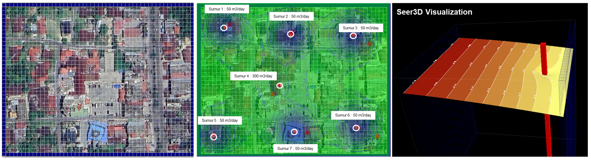

Hydrogeology · Groundwater
Contaminant Transport Using Simcore Processing MODFLOW
Integrated groundwater flow and contaminant transport modelling training using Simcore Processing MODFLOW, with practical applications for production wells, injection wells, recharge systems, and contaminant migration.

Overview Result